Ce este Google Drawings?
Google Drawings este un instrument gratuit, bazat pe web, pentru crearea și editarea imaginilor. Oricine cu care partajați linkuri vă poate edita conținutul pe Google Drawings, astfel încât utilizatorii să poată colabora în timp real la instrument. Google Drawings nu este la fel de popular ca Documente Google, Prezentare, Formular și Foaie de calcul, dar este plin de utilizări creative.
Ce putem realiza cu Google Drawings?
Infografie (realizarea infografilor)
- Obțineți datele pe care intenționați să le utilizați (adică, faceți-vă cercetările și adunați informațiile pe care doriți să le introduceți într-un infografic).
- Accesați Google Drive și faceți clic pe butonul albastru „NOU” din partea stângă sus a paginii. Accesați opțiunea „Mai multe” din meniul derulant și faceți clic pe Desene Google. Căutați în captura de ecran de mai jos pentru a vedea acest pas ilustrat.
-
Puteți redimensiona pânza trăgând în colțul din dreapta jos. 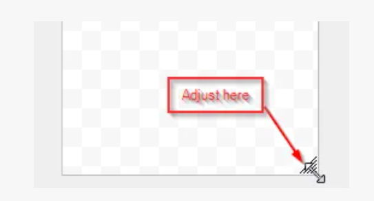
- Puteți adăuga imagini, forme și texte din Drive sau puteți obține imagini gratuite și le puteți încărca pe pânza dvs. 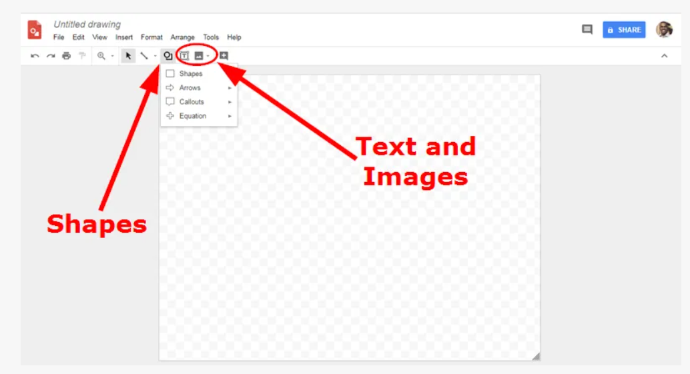
- De asemenea, vă puteți aranja textele, imaginile și formele folosind „Aranjați”. 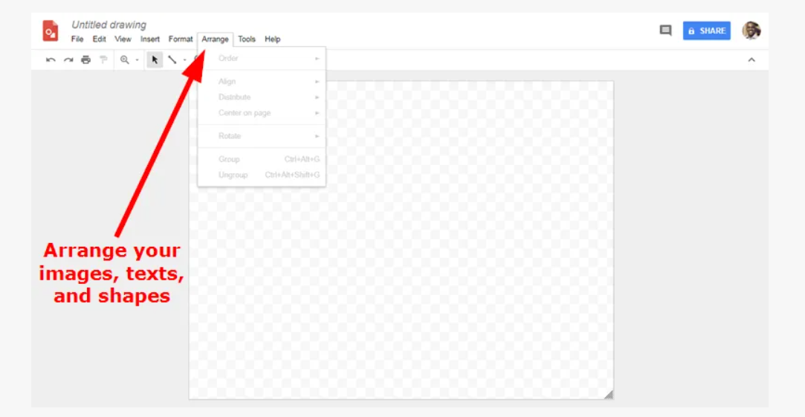
Organizatori grafici
- Un organizator grafic, cum ar fi diagrama entitate-relație,
harta conceptuală sau hărțile mentale, vă permite să vă reprezentați informațiile vizual.
Acești organizatori reprezintă informații în diferite moduri,
care includ, dar nu se limitează la următoarele.
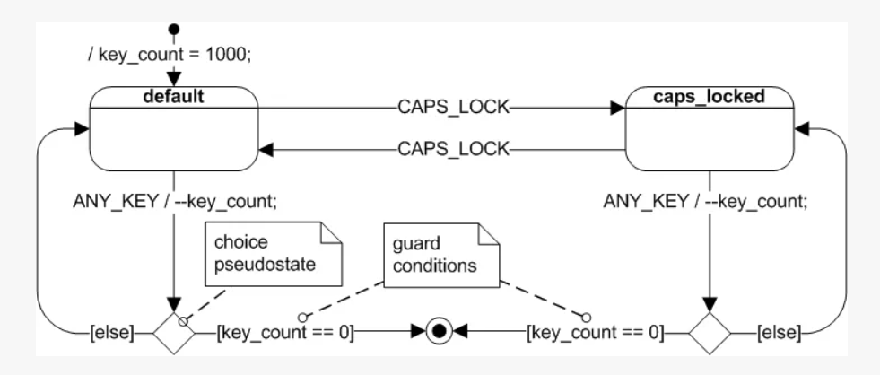 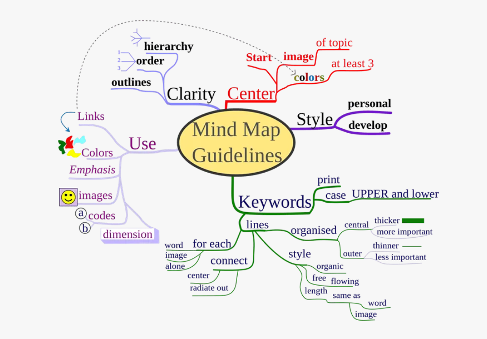
Diagrame adnotate
Google Drawings are o varietate de instrumente care facilitează adnotarea unei imagini.
- Puteți încărca direct o imagine pe foaia goală sau puteți face o captură de ecran cu tasta Print Screen. De asemenea, puteți adăuga imagini direct din imagini Google. Asigurați-vă că este o imagine pe care aveți licența să o utilizați.
Pentru a adăuga o imagine din Google Images urmați acești pași.
-
Accesați „Imagini” și faceți clic pe „Căutați pe web:” 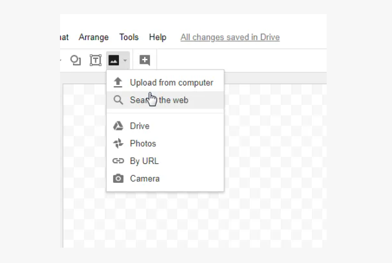
-
Veți primi o casetă de căutare Google. 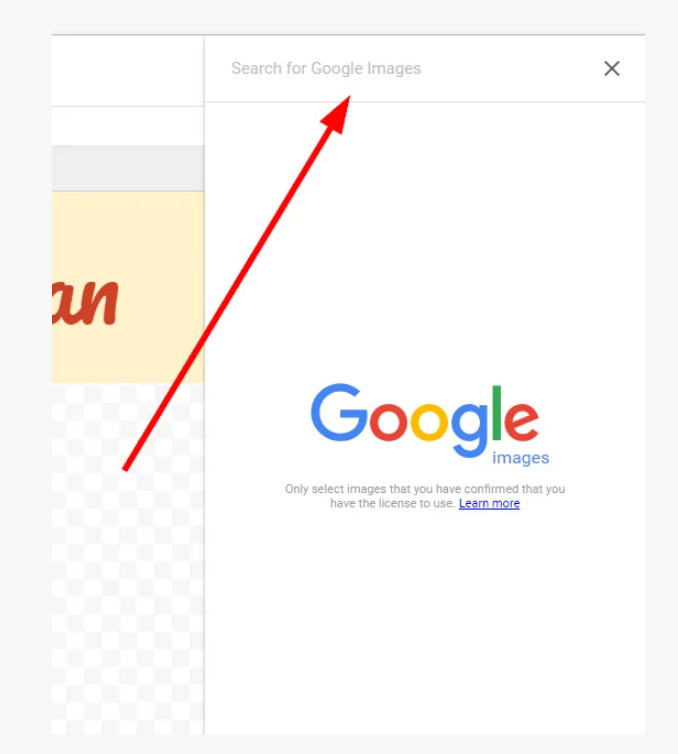
-
Căutați imaginea dorită. Pentru a fi în siguranță, am căutat „Pisici din Creative Commons”. 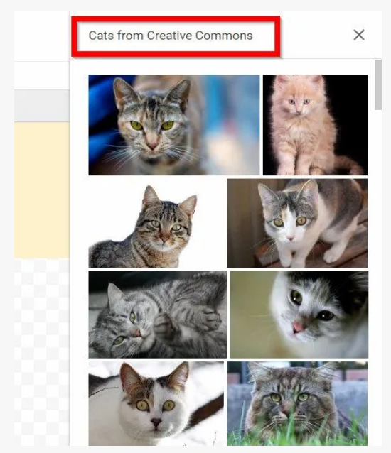
-
Puteți rămâne în siguranță descărcând sau importând manual imagini din surse gratuite de imagini. După ce ați adăugat imaginea, o puteți edita în Google Drawings.
-
Apoi am adnotat imaginea folosind săgeți și casete de text. 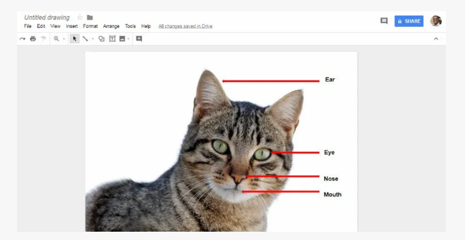
-
Puteți descărca imaginile adnotate accesând „Fișier -> Descărcare ca -> Alegeți formatul imaginii” așa cum se arată în captura de ecran de mai jos 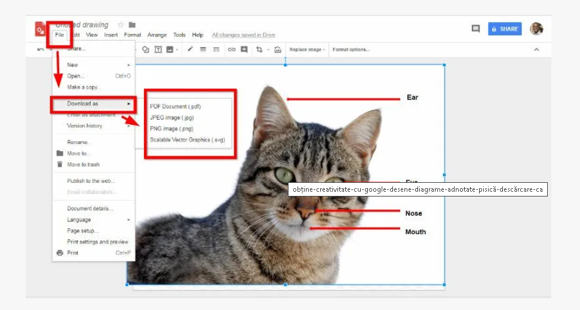
Crearea benzii de benzi desenate
Benzi desenate sunt create atunci când adăugați discuri și / sau bule de gândire la desenele dvs. Puteți obține aceste bule accesând „pictograma Formă -> înștiințări”, apoi selectând-o pe cea pe care o considerați potrivită
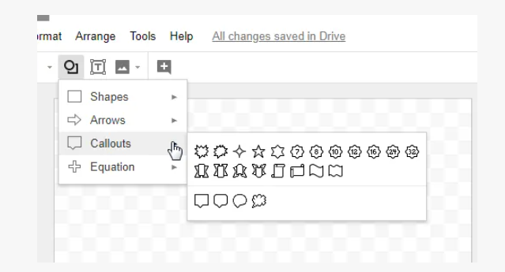
De asemenea, puteți accesa aceste înștiințări accesând „Inserați -> Formă -> înștiințări”.
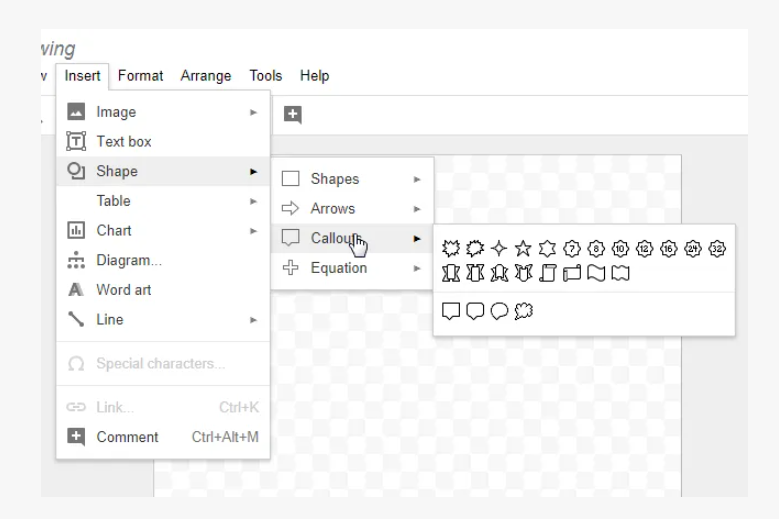
Dacă aveți o imagine sau un desen pregătit pentru banda desenată, încărcați-l. Dacă doriți să o faceți în timp real, puteți face o fotografie urmând câțiva pași. Accesați „Inserați -> imagine -> cameră” pentru a utiliza camera tabletei, laptopului sau a altui dispozitiv. Apoi folosiți discursuri sau bule de gândire pentru a descrie ceea ce se spune.
Treceți Classroom în Chatroom
În zilele noastre este destul de obișnuit ca oamenii să fie școlari sau să studieze în străinătate în timp ce locuiesc în țara lor. Puteți utiliza Google Drawings ca o tablă albă interactivă și puteți partaja cu un grup de persoane.
Pentru a realiza acest lucru, creați un desen și faceți-l partajabil făcând clic pe butonul albastru de partajare din
partea dreaptă sus a paginii.
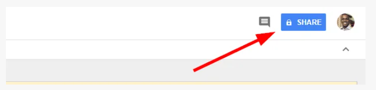
Faceți clic pe „obțineți un link care poate fi partajat” și alegeți „oricine are linkul poate edita”.
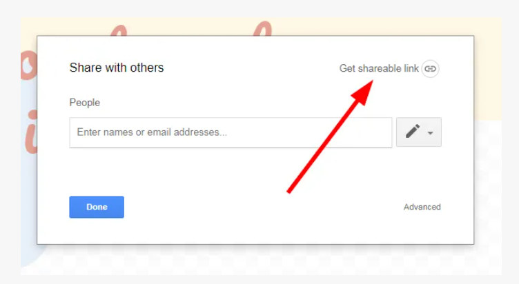
Veți obține link-ul de partajat.
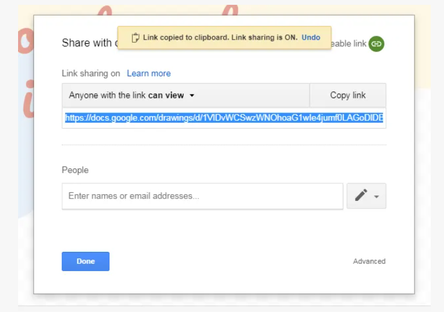
Schimbați opțiunea Partajare link la „Oricine are linkul poate edita” și faceți clic pe butonul „Terminat”.
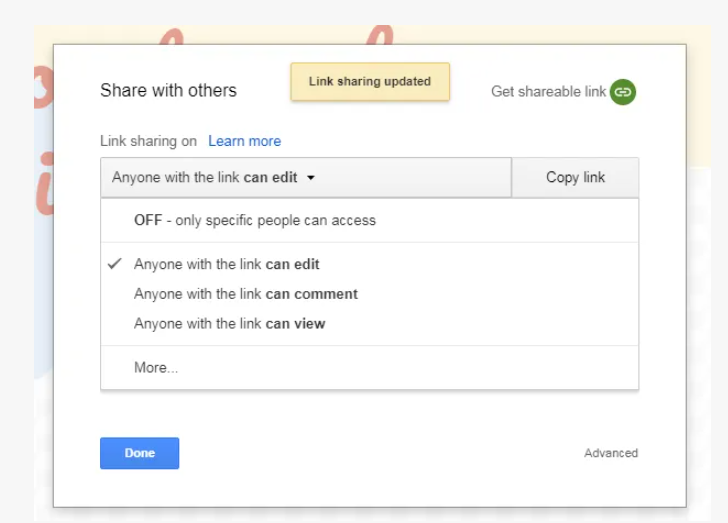
Deoarece toată lumea cu linkul poate face modificări, este important să aveți instrucțiuni pentru a menține grupul organizat.
Puteți urmări fiecare editare făcând clic pe „Fișier -> consultați istoricul reviziilor”.
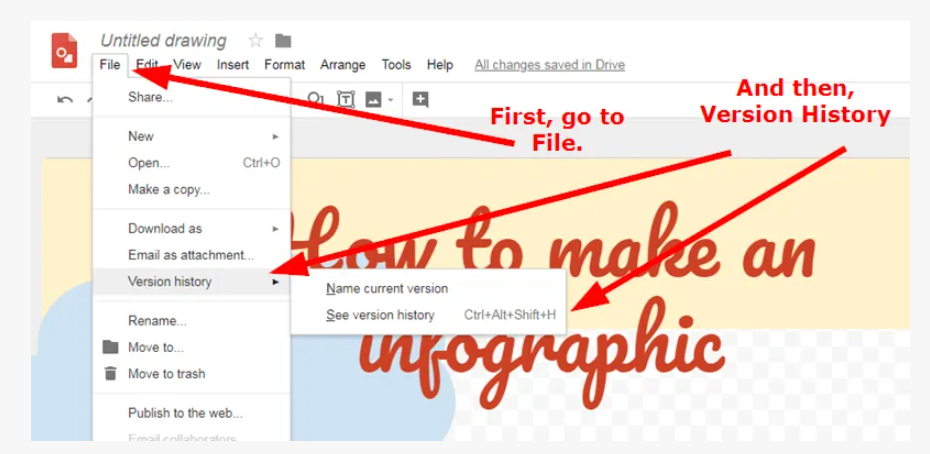
Realizați cronologii cu Google Drawings
Puteți crea cronologii care conțin informații atașate la diferite date cu Google Drawings. De asemenea, puteți adăuga imagini care se însoțesc cu informațiile pe care le-ați furnizat deja.
Acest lucru poate fi util atunci când doriți să spuneți o poveste. În loc să aveți informațiile împrăștiate, le puteți spune cu privire la momentul în care au avut loc.
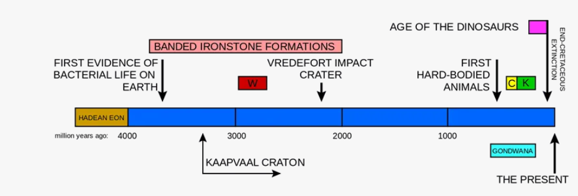